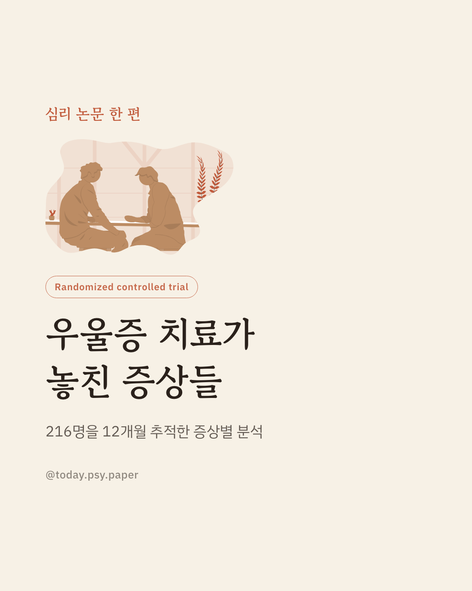
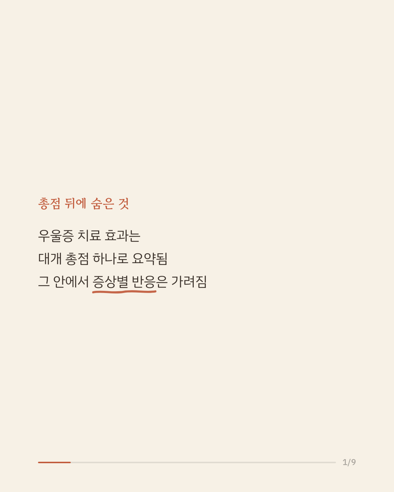
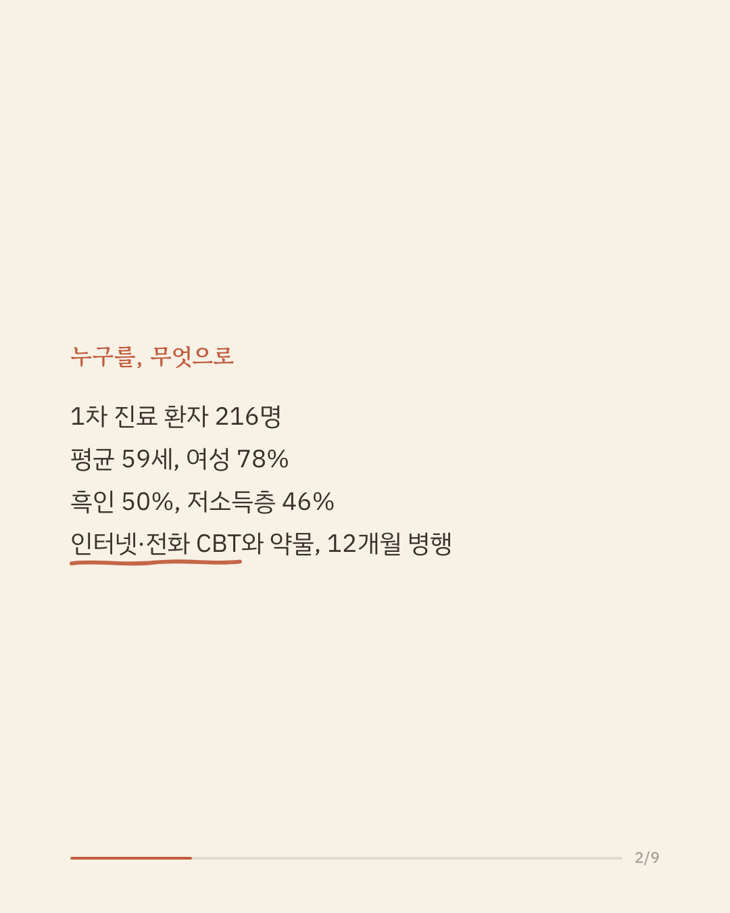
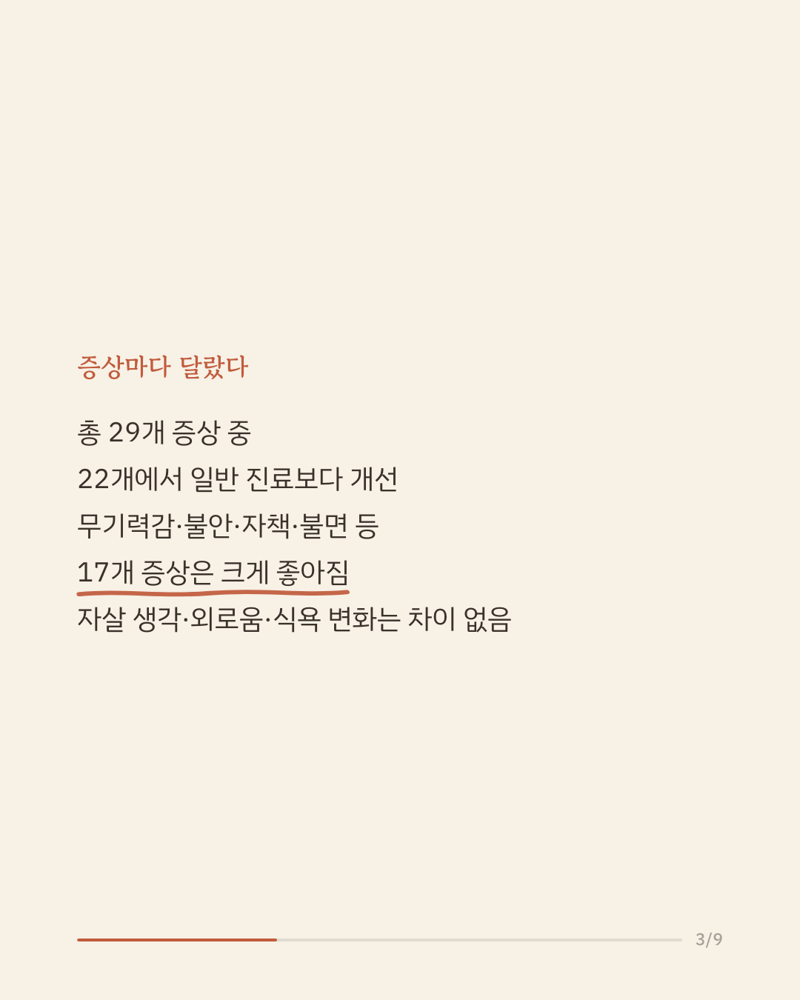
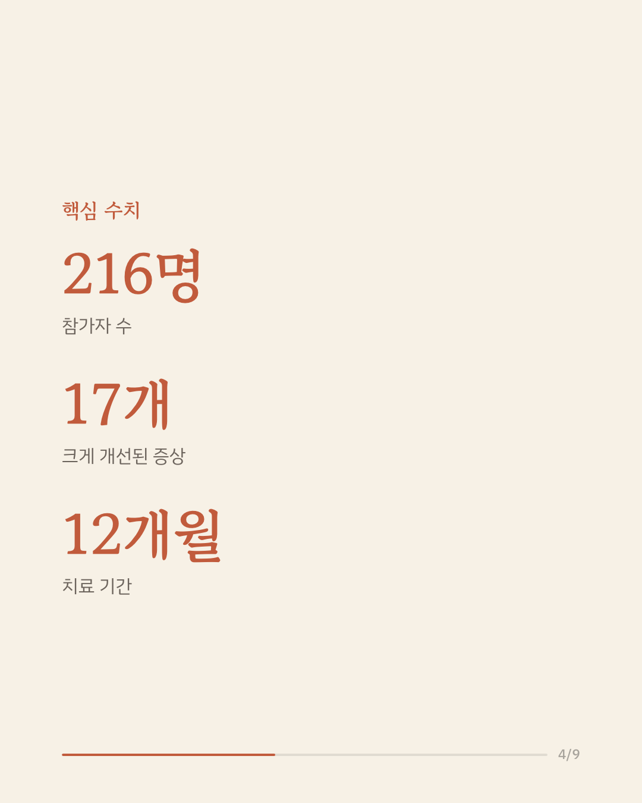
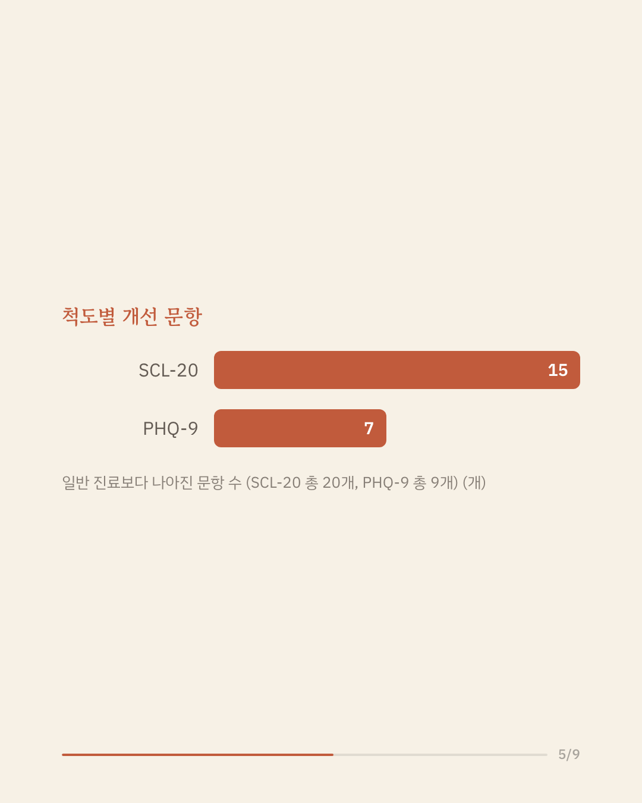
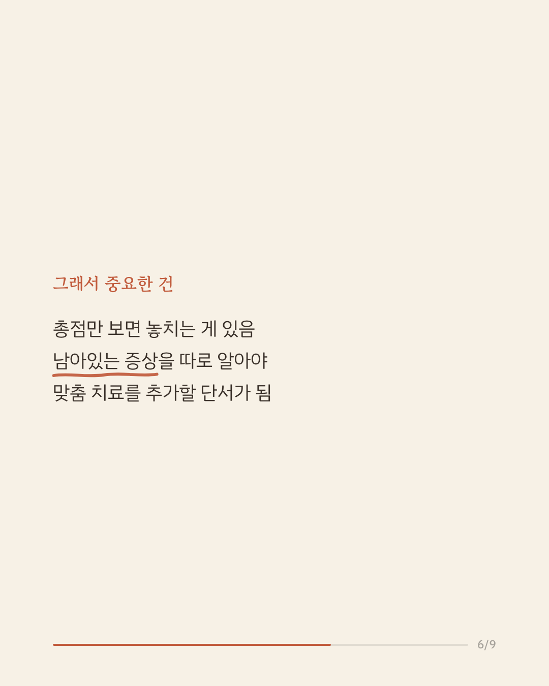
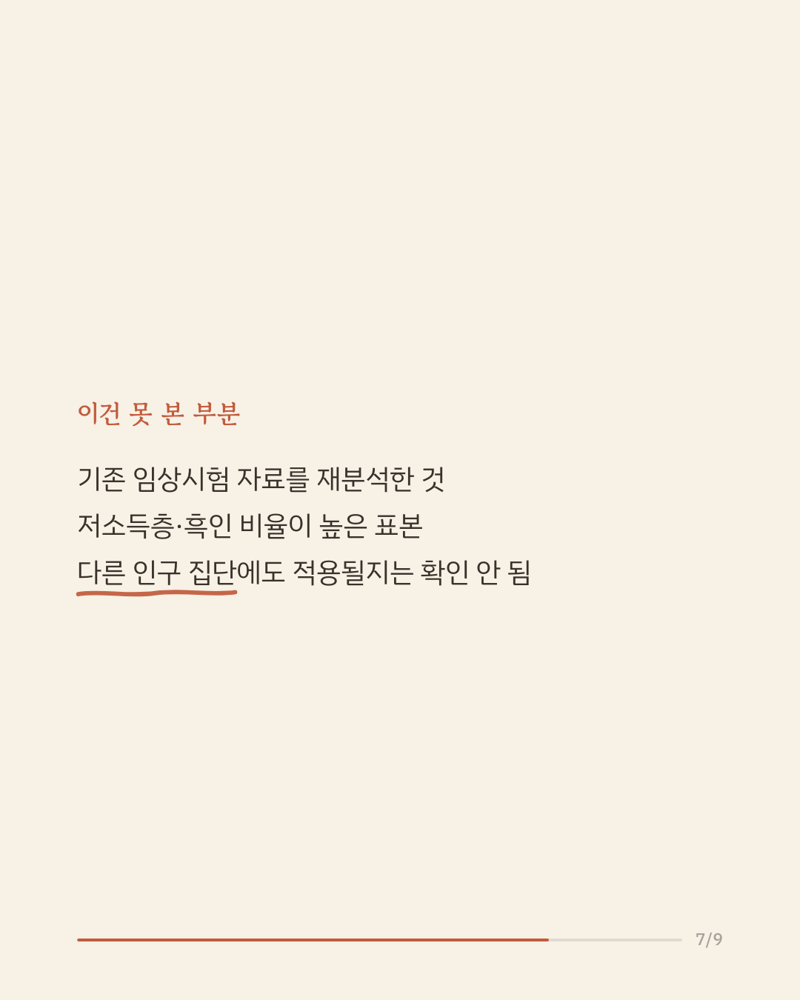
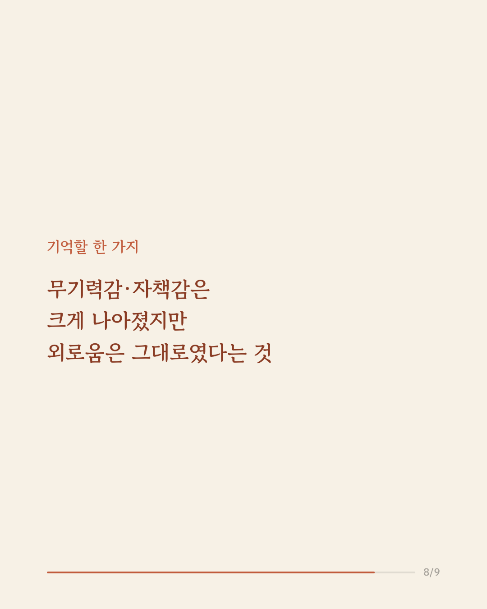
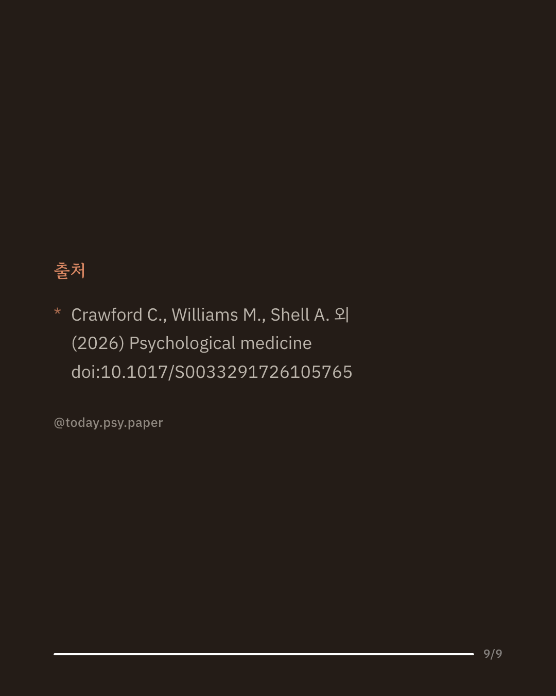

우울증 치료는 흔히 총점으로 효과를 판단합니다. 하지만 총점 하나로는 어떤 증상이 실제로 나아졌는지 알기 어렵습니다. 미국의 1차 진료 환자 216명을 대상으로, 인터넷·전화 인지행동치료와 약물을 결합한 협력치료를 12개월간 시행하고 일반 진료와 비교했습니다. 참가자의 절반은 흑인, 46%는 연소득 1만 달러 미만이었습니다. 그 결과 29개 증상 중 22개에서 협력치료가 일반 진료보다 더 나은 효과를 보였습니다. 무기력감, 불안, 자책감, 불면, 피로감 등 17개 증상은 크게 개선됐습니다. 반면 자살 생각, 외로움, 식욕 변화, 성기능 문제 등은 눈에 띄는 차이가 없었습니다. 연구팀은 총점만 보면 이렇게 남는 증상들이 가려질 수 있다고 말합니다. 이 결과는 기존 임상시험 자료를 다시 분석한 것으로, 표본이 저소득층·흑인 비율이 높은 특정 집단에 치우쳐 있다는 한계가 있습니다. 출처: Psychological Medicine (2026), 'Effect of modernized collaborative care for depression on individual depressive symptoms: A secondary analysis of the eIMPACT trial' #임상심리 #정신건강정보 #논문리뷰 #우울증치료 #심리학연구
python3 publish.py 42765385